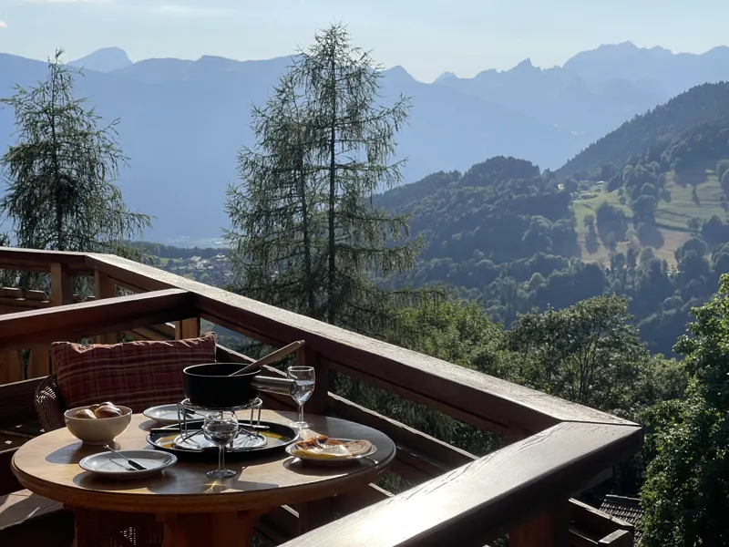

Villars-sur-Ollon is a small Alpine village, and two of the world's best-known boarding schools are in it: Aiglon College and Beau Soleil. On parents' weekends, exeats, arrivals and graduation, a lot of families need beds in the same few streets at the same time. This page is what we'd tell a friend making the trip.
Getting to Villars
From Geneva Airport
- By train: there are direct trains from the airport station along Lake Geneva to Bex. From Bex, the little mountain railway climbs up to Villars. Allow about 2 hours in total.
- By car: about 1 hour 30 minutes on the motorway towards the Valais, leaving at Aigle or Bex and climbing up to Villars. In winter, check whether you need snow chains.
- Transfers: private minibus transfers from Geneva are common on school weekends. Book early.
From Zurich
Allow about 3 hours by train, changing at Lausanne or Aigle for the last leg.
Tip: the flat is 500 m from Villars station, so you can arrive by train and manage without a car. In winter the free ski bus stops 20 m from the door.
When to book
Dates around the start and end of term, half-term, exeat weekends and graduation are the first to go, especially in a ski-season February. Check your school's calendar and book once the dates are published. A flat with free cancellation can be held early and cancelled later if the plan changes.
Hotel or apartment?
A hotel room is easy for one night. For a long weekend with a teenager and their friends, many families prefer a flat:
- space to spread out, and a second bathroom
- breakfast in your own time, and a fridge for the snacks they'll ask for
- a sofa bed for a sibling or friend
- fondue or raclette on the balcony instead of another restaurant booking
What to do together
In winter: a day on the slopes, an evening on the ice rink, or a swim in the pool after a cold walk. In summer: the little train up to the Bretaye lakes, a round of golf, or a day trip to Lake Geneva and the Château de Chillon. There's more on the summer and winter guides on the main page.

Le Bristol A46
A one-bedroom apartment for up to 4, with two bathrooms, two balconies and a heated indoor pool in the building. It's 500 m from the village centre, a short drive or bus ride from both schools, and Interhome handles bookings, keys and cleaning.
See available datesA privately owned apartment. We are not connected with either school. Travel times are approximate, so check timetables before you travel.